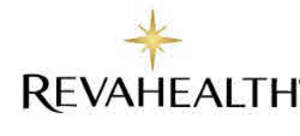

Trade Mark Journal No.2026/010 6 March 2026
UK00004343119 20 February 2026 (3)

- Class 3
- Adhesives for cosmetic use; Ointments for cosmetic use; Pencils for cosmetic use; Gels for cosmetic use; Toners for cosmetic use; Chalk for cosmetic use; Piperonal for cosmetic use; Heliotropin for cosmetic use; After-sun preparations for cosmetic use; Recovery creams for cosmetic use; Face creams for cosmetic use; Body cream for cosmetic use; Hydrating creams for cosmetic use; Facial serum for cosmetic use; Facial peel preparations for cosmetic use; After-sun milk for cosmetic use; Cosmetics for personal use; Body emulsions for cosmetic use; Anti-aging serum for cosmetic use; Cold creams for cosmetic use; Slimming aids [cosmetic], other than for medical use; Hair preservation treatments for cosmetic use; Spirit gum for cosmetic use; Wrinkle-minimizing cosmetic preparations for topical facial use; Lavender oil for cosmetic use; Impregnated cloths for cosmetic use; Citronella oil for cosmetic use; Face lifting stickers for cosmetic use; Lotions for cosmetic purposes; Bath soak for cosmetic use; Sun care preparations for cosmetic use; Eucalyptus oil for cosmetic use; Rosemary oil for cosmetic use; Hair desiccating treatments for cosmetic use; Adhesives for cosmetic purposes; Age spot reducing creams for cosmetic use; Bay rums for cosmetic use; Henna for cosmetic purposes; Astringents for cosmetic purposes; Pomades for cosmetic purposes; Pencils for cosmetic purposes; Glitter for cosmetic purposes; Serums for cosmetic purposes; Toners for cosmetic purposes; Gels for cosmetic purposes; Tissues impregnated with essential oils, for cosmetic use; Natural oils for cosmetic purposes; Lacquer for cosmetic purposes; Bath oils for cosmetic purposes; Suntan oils for cosmetic purposes; Body paint for cosmetic purposes; Transfers (Decorative -) for cosmetic purposes; Decorative transfers for cosmetic purposes; Milk for cosmetic purposes; Topical skin sprays for cosmetic purposes; Shampoos for personal use; Pro-collagen for cosmetic purposes; Retinol cream for cosmetic purposes; Collagen for cosmetic purposes; Mask pack for cosmetic purposes; Artificial nails for cosmetic purposes; Deodorant for personal use; Deodorants for personal use; Cotton wool in the form of wipes for cosmetic use; Cotton for cosmetic purposes; Lint for cosmetic purposes; Exfoliating scrubs for cosmetic purposes; Lip stains for cosmetic purposes; Skin hydrators for cosmetic purposes; Soaps for personal use; Removable tattoos for cosmetic purposes; Essences for cosmetic purposes ; Essences for cosmetic purposes; Deodorant preparations for personal use; Greases for cosmetic purposes; Essential oils for cosmetic purposes; Shaving stones [astringents for cosmetic purposes]; Shaving stones being astringents for cosmetic purposes; Antiperspirants for personal use; Skin conditioning creams for cosmetic purposes; Coloring preparations for cosmetic purposes; Cooling sprays for cosmetic purposes; Cleansing milk for cosmetic purposes; Anti-perspirants for personal use; Nail varnish for cosmetic purposes; Skin care creams, other than for medical use; Colouring preparations for cosmetic purposes; Gel eye patches for cosmetic purposes; Temporary tattoos for cosmetic purposes; Anti-ageing serums for cosmetic purposes; Procollagen for cosmetic purposes; Cosmetic moisturisers; Massage candles for cosmetic purposes; Cosmetics and cosmetic preparations; Creams (Cosmetic -); Cosmetic creams; Herbal extracts for cosmetic purposes.
Ian Yekinni